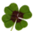

Flore de Madagascar
|

|
Vous pouvez partager vos connaissances en l’améliorant (comment ?) selon les recommandations des projets correspondants.
|
La flore de Madagascar est très riche. Elle comporte 80% d'espèces endémiques parmi les 13 000 espèces de plantes estimées.
{kind=link}
{kind=link}
Sommaire[masquer] |
histoire floristique de l'île[modifier]
La variété des biotopes et des climats (des plus arides à celui de la forêt de nuages, saturée en humidité), sur une île globalement orientée nord-sud, avec gradient altitudinal liée à la chaine montagneuse elle-même globalement orientée nord-sud explique pour partie la variété des espèces. Mais la biodiversité endémique exceptionnelle de l'île est une originalité due au fait que Madagascar s'est séparée du continent africain il y a environ 100 millions d'années ; L'isolement de l'île, l'absence de grands prédateurs, a contribué à l'évolution originale des espèces actuelles.
Madagascar possède une flore endémique réellement unique au monde rapportée à la superficie du pays, avec notamment plus de mille espèces d'orchidées [1].
- Baobabs : il existe 6 espèces différentes de baobabs endémiques de Madagascar sur 8 pour l'ensemble de la planète
- Adansonia grandidieri – Baobab de Grandidier
- Adansonia madagascariensis – Baobab de Madagascar
- Adansonia perrieri – Baobab de Perrier (Nord de Madagascar)
- Adansonia rubrostipa (syn. A. fony) – Baobab Fony
- Adansonia suarezensis – Baobab de Suarez (Diego Suarez)
- Adansonia za – Baobab Za
Le nom Adansonia est un hommage à Michel Adanson, naturaliste et explorateur français, le premier à avoir décrit Adansonia digitata.
Galerie[modifier]
|
Adansonia grandidieri, un des baobabs endémiques de Madagascar |
Adansonia grandidieri, dans son environnement |
Adansonia grandidieri en bordure de route de latérite |
Pachypodium Rosulatum Gracilius |
{kind=link}
{kind=link}
{kind=link}
{kind=link}
Voir aussi[modifier]
Articles connexes[modifier]
Bibliographie[modifier]
- "Les Euphorbes de Madagascar", N. Rebmann, numéro spécial 2007 - Revue Succulentes, Association Internationale des Amateurs de Plantes Succulentes
- Alfred Grandidier (1875-1921) Histoire physique, naturelle et politique de Madagascar 1892, Paris, Hachette.
- Lucile Allorge, Atlas des plantes de Madagascar, 224 pages, Editions Ulmer, 2008.
Liens externes[modifier]
- Catalogue des Flores de Madagascar
- Biodiversité de Madagascar (Convention de Rio sur la Biodiversité)
- Revue spécialisée, liste
- Histoire de la Grande Isle Madagascar, composée par le sieur de Flacourt (Lien vers l'œuvre sur Gallica)
- Conservation du patrimoine naturel de Madagascar